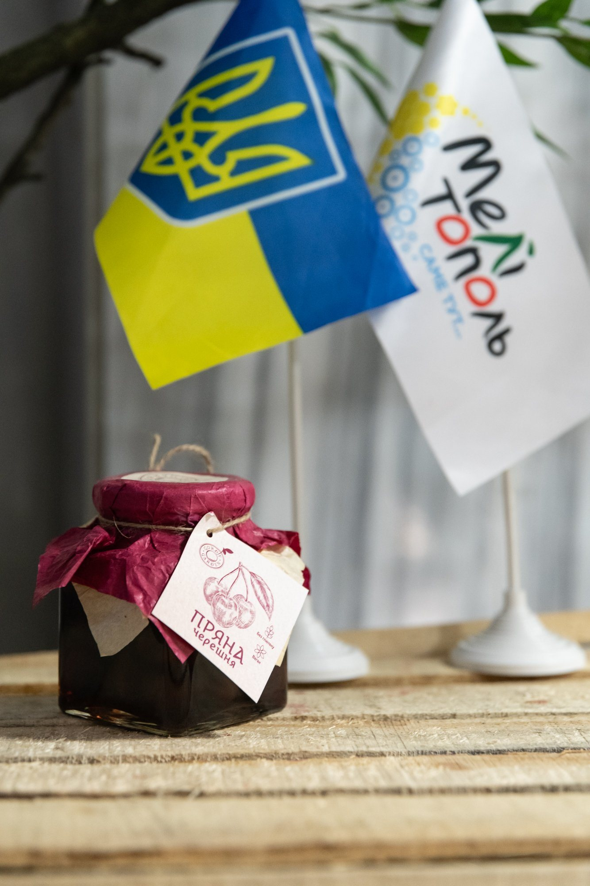
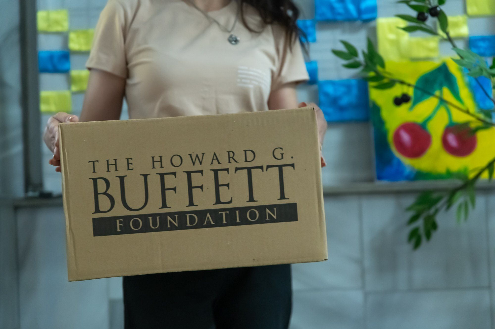
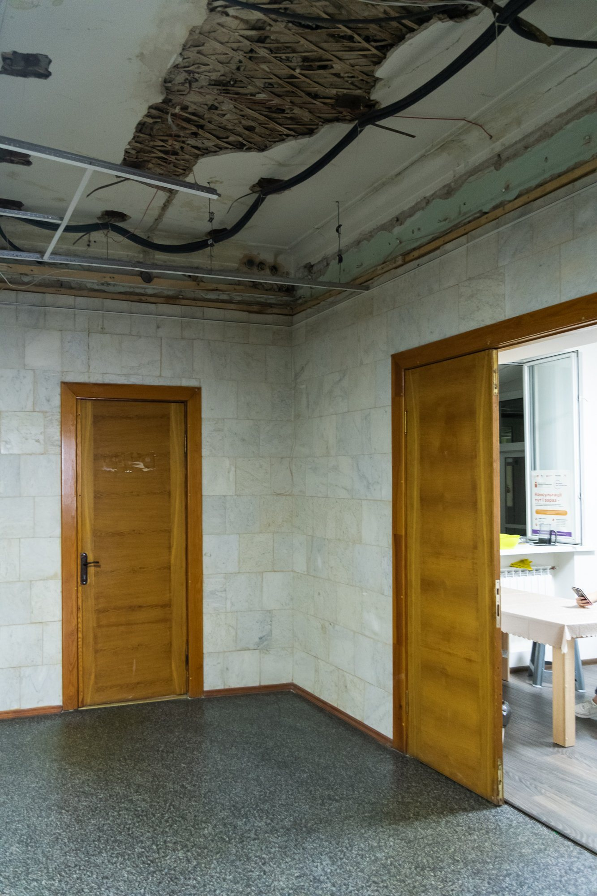
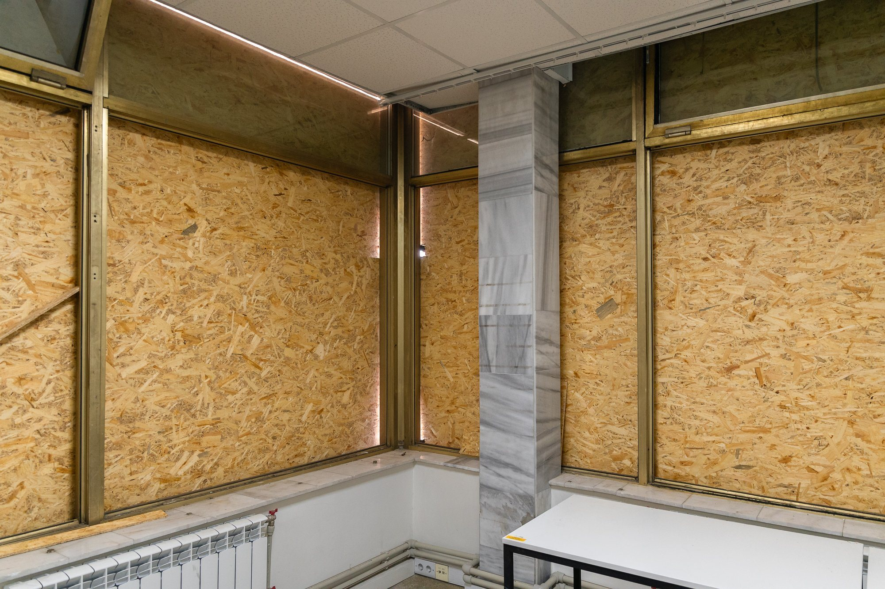
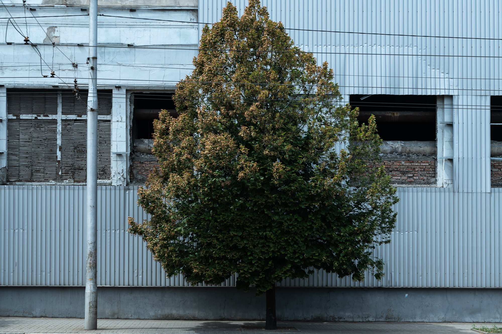
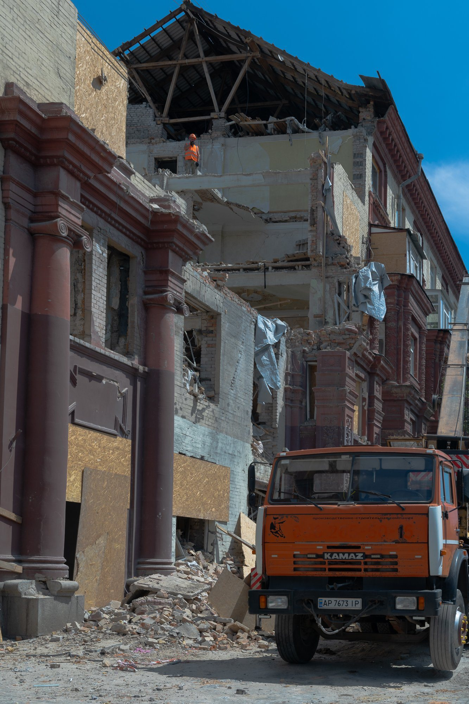

IDP center reportage
Around 4 million people in Ukraine are IDP*
*Internally Displaced Persons
They come from cities devastated by war or occupied by Russia. Some have no home to return to, and all must rebuild their lives elsewhere.
Zaporizhzhia, as the nearest city in Ukraine-controlled territory, became a refuge for many displaced people from Melitopol.

It is never easy…
But the humanitarian hub operates thanks to volunteers who help their fellow citizens settle into a new place, receive the necessary assistance, and process documents.
By coming together, people have managed to recreate at least a tiny piece of their native Melitopol here – a city once famous for its cherries.
Even if you're a volunteer helping others who, like you, have fled your home city, you're still in danger if your family remains in the occupied territory.
So, you choose to stay invisible.


This is not a safe heaven

Regular missile attacks continue on the city that has sheltered refugees.
Shattered windows and damaged ceilings are everywhere.


People tell their stories through the post-it notes
I want to return to my parents, says one of them